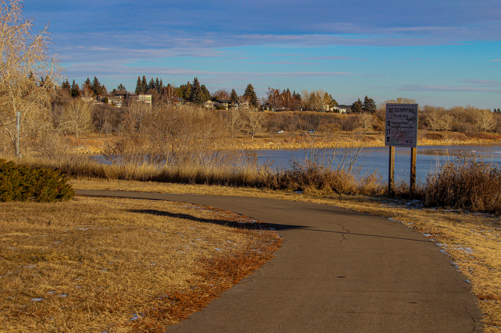
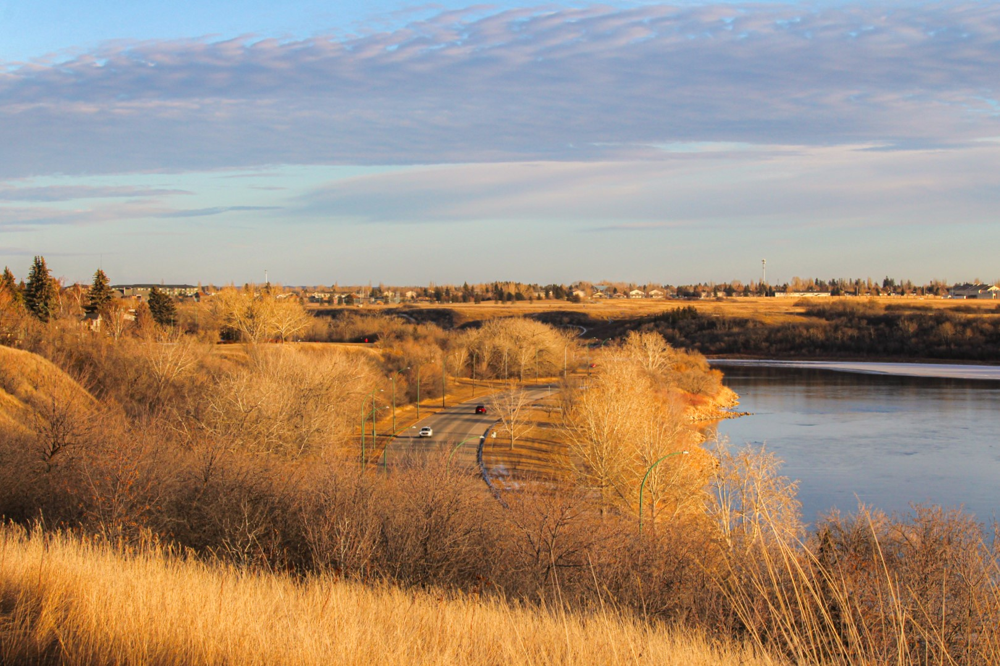
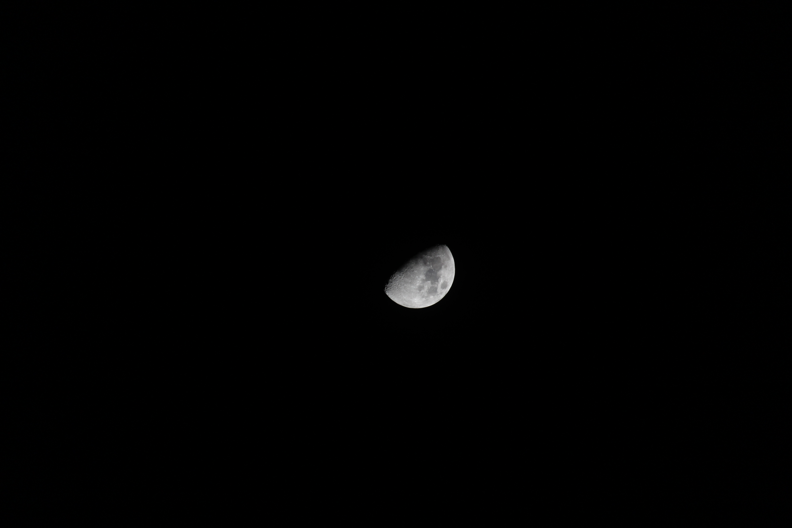
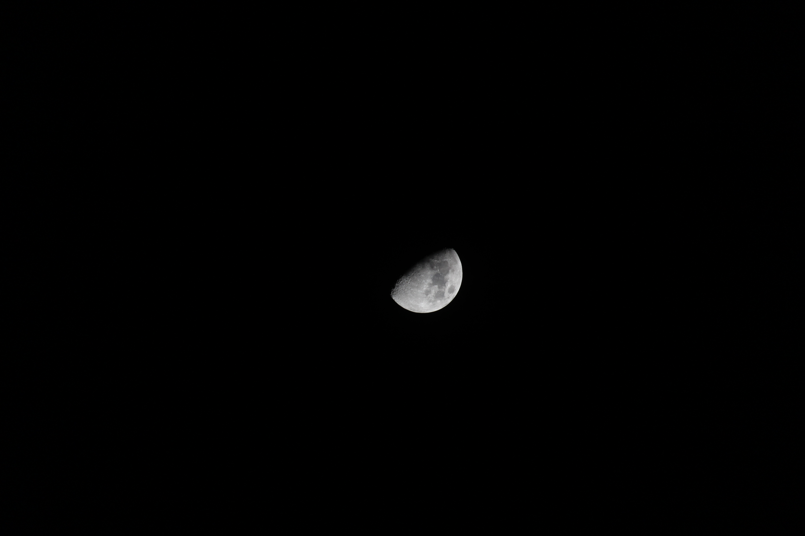

f/5.6, 1/1000 sec., ISO 3200, 50mm.

f/9, 1/250 sec., ISO 100, 64mm
f/10, 1/125 sec., ISO 100, 250mm
f/7.1, 1/125 sec., ISO 100, 250mm
f/10, 1/160 sec., ISO 100, 61mm
f/7.1, 1/500 sec., ISO 100, 250mm
f/7.1, 1/500 sec., ISO 100, 250mm
f/7.1, 1/1000 sec., ISO 100, 55mm

f/13, 1/160 sec., ISO 100, 55mm
f/9, 1/160 sec., ISO 100, 55mm
f/5.6, 1/400 sec., ISO 200, 250mm
 f/5.6, 1/200 sec., ISO 400, 250mm
f/5.6, 1/200 sec., ISO 400, 250mm
 f/5.6, 1/500 sec., ISO 100, 250mm
f/5.6, 1/500 sec., ISO 100, 250mm
 f/7.1, 1/400 sec., ISO 100, 250mm
f/7.1, 1/400 sec., ISO 100, 250mm
 f/7.1, 1/200 sec., ISO 100, 250mm

f/5.6, 1/400 sec., ISO 200, 250mm
f/7.1, 1/200 sec., ISO 100, 250mm

f/5.6, 1/400 sec., ISO 200, 250mm